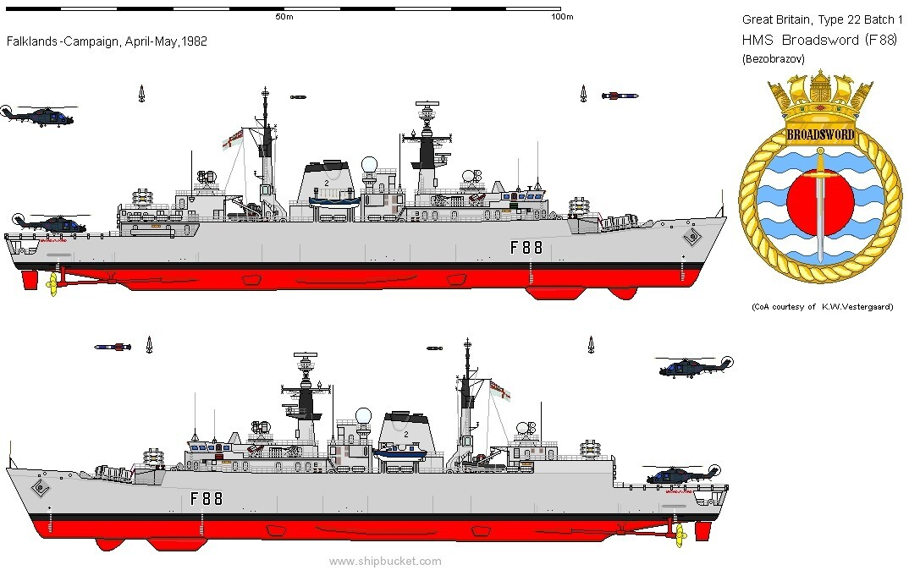
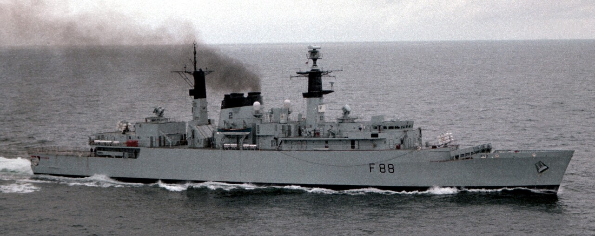
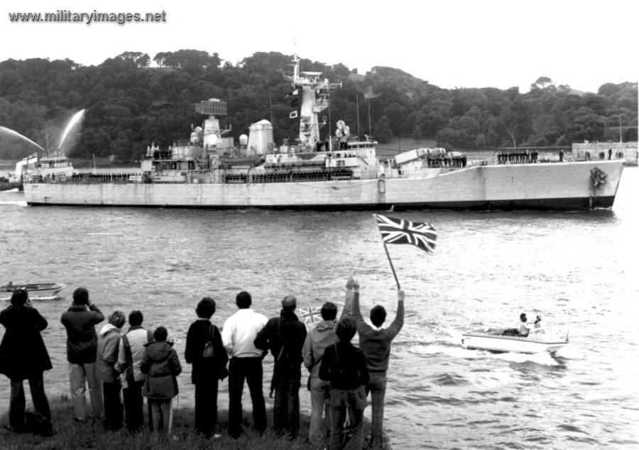
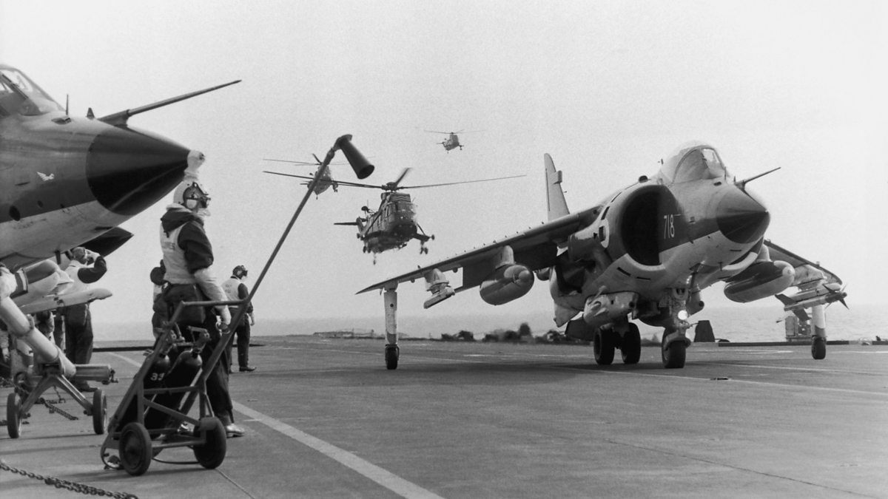
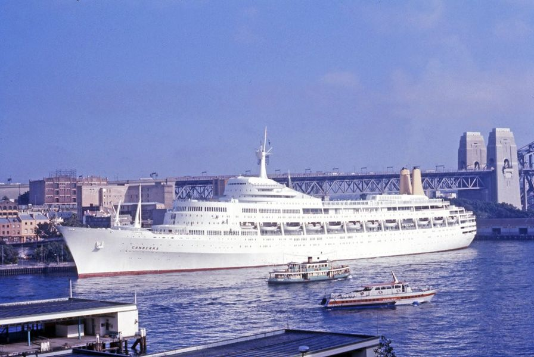
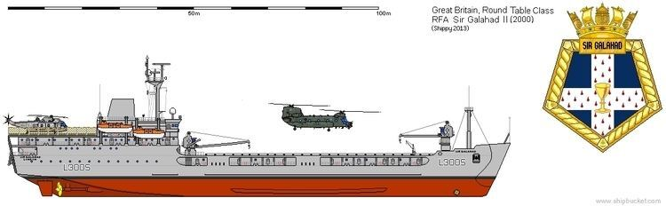
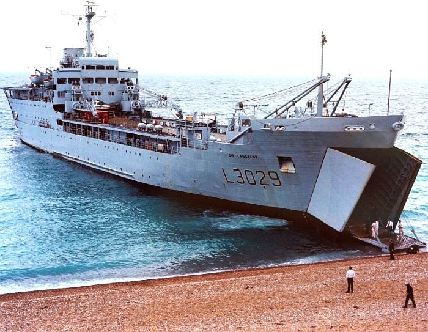

포클랜드 전쟁 잡담 - 항모와 수송선
게시: 2022-04-14T06:30:08+09:00
<포클랜드에서의 영국 해군 함정들은 sitting duck> 5월 21일 첫날 아르헨티나 공군기들의 폭격으로 피해를 입은 것은 HMS Ardent 뿐만이 (당연히) 아니었음. IAI Dagger 전투기들이 들이닥쳐 HMS Antrim에게 폭탄을 투하. 모두 불발탄이었나 대거 전투기들은 30mm 기관포로 기총 소사를 가한 뒤에야 돌아감. 이 첫날 전투부터 아르헨티나 공군의 폭탄에는 불발탄이 매우 많아서 이날 하루에만 총 13발의 폭탄이 불발로 끝남. 이어서 날아든 대거 전투기들은 HMS Argonaut와 HMS Broadsword(아래 사진1)를 노렸고, 이어서 다른 대거들이 날아와 HMS Brilliant를 공격. 그러나 쓸만한 단거리 대공 미쓸인 Sea Wolf를 갖춘 몇 안되는 구축함 중 한 척인 브로드소드의 시울프 미쓸이 위력을 발휘해 대거 1대를 격추시키고 다른 1대에 피해를 입힘. 그리고 폭탄들은 모두 불발 또는 날개 파일런에서 걸려 투하가 안되는 바람에 피해를 면함. HMS Antrim에도 대거 전투기가 폭탄을 투하했으나 또 불발. 고물 쪽만 파손시킴.
 
HMS Argonaut (아래 사진2)에도 1천 파운드짜리 폭탄이 2발이나 명중했으나 모두 불발. 그러나 그 불발탄 중 하나는 얇은 함체를 뚫고 쓸모도 없는 단거리 대공 미쓸 Sea Cat을 보관해둔 탄약고까지 뚫고 들어가 Sea Cat 미쓸을 폭발시킴. 결국 이 자체 미사일의 유폭으로 아고노트는 큰 피해를 입음.

전반적으로 영국 해군의 대공 미쓸들은 별 쓸모가 없었고 숫자가 부족했던 재래식 대공포는 아르헨티나 공군기들을 저지하기에는 역부족. 좁은 포클랜드 해협과 더 좁은 산 카를로스 만 안의 영국 구축함들과 프리깃함들은 그야말로 sitting duck. 그런데 이들을 지켜줘야 했을 해리어들은 대체 뭘 하고 있었을까?

(5월 21일 상륙 첫날의 상황도)
<Harrier는 대체 뭘하고 있었나> 일단 아르헨티나 공군기들도 무작정 덤벼들지 않고 나름 머리를 씀. 제공 전투기인 Mirage들, 또는 공군 민항기인 Learjet 등은 폭탄이 아예 없었으나 괜히 북쪽에서 깔짝거리면서 영국군 해리어들을 꾀어냈고, 그 사이를 노리고 폭탄을 장착한 공격기들이 영국 군함들을 노림. 영리한 영국 조종사들은 곧 그 패턴을 알아채고 미라쥬나 리어젯이 얼쩡거리는 외곽으로는 나가지 않고, 공격기들이 날아드는 루트 근처에서 맴돌며 지역 방어를 수행. 근데 그럼에도 문제가 많았음. 가장 큰 문제는 영국 해군의 항모 걱정. 항모를 지키기 위해 프리깃이나 구축함을 희생시키는 것은 이해가 가는 일이지만, 항모를 너무 아끼는 바람에 포클랜드 섬에서 한참 떨어진 곳에서만 맴돌다보니 해리어가 산 카를로스 상공에 머무는 시간이 줄어듬. 항모에서 산 카를로스까지 왔다갔다 하느라 연료와 시간의 낭비가 상당했기 때문. 상륙전단 지휘관은 함대 사령관에게 항모를 좀더 전진배치하여 아르헨티나 공군기들이 해협 내로 들어오기 전에 요격해달라고 부탁했지만, 함대 사령관인 Woodward는 단호히 거절.

이는 어느 정도 이해가 가는 일. 항모는 아르헨티나가 노리는 제1 타겟이었고, 특히 공포의 엑조세 미사일 1방이면 항모 전체가 작전 불능이 되므로 항모가 몸을 사리는 것은 어쩔 수 없었음. 게다가 해리어들도 나름 열심히 싸워 아르헨티나 공군기 10대 중 6대는 폭탄을 투하하기 전에 (격추까지는 아니더라도) 요격당했음. 그런데 문제는 그렇게 항모를 노리고 지키느라 정작 상륙 작전에서 가장 중요한 것을 영국도 아르헨티나도 다 놓치고 있었음. 바로 병력이 탑승한 수송선들.
<캔버라와 원탁의 기사들> 산 카를로스 상륙 첫날 영국 구축함들의 대공 시스템은 완전 먹통인데 해리어들의 방공망도 숭숭 뚫리는 상황에서, 상륙할 병력과 물자를 가득 실은 수송선들이 정작 거의 피해를 입지 않았다는 것은 정말 기적. 특히 영국군은 하얗고 커다란 여객선 SS Canberra(사진1)는 무사하지 못할 것으로 보았는데 기적적으로 멀쩡. 전쟁이 끝난 뒤, 아르헨티나 공군 조종사들은 그 크고 하얀 여객선이 병원선인줄 알았다고 항변. 실제로 캔버라는 상륙이 끝난 뒤에는 부상병들을 수용할 계획이었으므로 그게 꼭 착각은 아니었음. 아무튼 아르헨티나 조종사들이 군함들만 노리는 바람에 정작 수송선들은 멀쩡.

그러나 분명히 아르헨티나 전투기를 폭탄을 비오듯 떨구는 상황은 영국 해군 소속인 6척의 상륙함, 즉 Round-table(실제로 선박명들이 갤러해드, 랜슬롯 등 원탁의 기사들 이름이었음)급 LSL (Landing Ship Logistics, 사진2)들과 영국 해군이 징발한 상선들에게는 무시무시한 스트레스. 그런 폭음과 연기, 물보라 속에서 작은 상륙정에 병사들과 물자를 옮겨 내리고 다시 그 상륙정을 해안에 보냈다가 회수하고 하는 작업이 큰 지장을 받는 것은 당연. 원래 '원탁의 기사'급 LSL들은 이번에 우크라이나에서 격침된 러시아의 Alligator급 상륙함처럼 해변에 직접 선수를 들이대고 선수갑문을 열어서 병력과 차량을 쏟아내야 했으나, 산 카를로스의 수심이 너무 낮아서 그게 불가능하여 더욱 오래 걸림. 덕분에 하루종일 하역을 했는데도 5월 21일 첫날 고작 3천의 병력과 1천톤의 물자만 하역했음. 아직 하역할 병력과 물자가 한참 남은 상태.
 
그럼에도 불구하고 영국군은 첫날의 행운을 둘째날 셋째날에도 기대할 수는 없다고 보고 내릴 병력과 짐이 아직 많았는데도 Canberra, Norland, Europic Ferry와 Stromness 등 징발 상선들을 밤 사이에 모두 산 카를로스 만에서 철수시킴. 그래도 하역은 해야 하므로 둘째날 낮에 먼 해역에서 캔버라와 유로픽 페리의 남은 짐을 부지런히 내려 놀랜드와 스트롬니스에 옮겨 싣고 밤에 몰래 다시 산 카를로스로 돌아와 밤을 새워 짐을 내림. 그럼에도 불구하고 영국군의 하역 작업은 며칠이 더 걸렸는데, 이유는 역시 정식 해군 상륙함들에 비해 민간 상선들의 하역 능력이 1/4 밖에 안 되었기 때문. 이때 캔버라에는 몇 명의 병력이 타고 있었는지는 기록에 나오지 않는데, 영국에서 출발할 때는 2,400명을 태우고 왔음. 캔버라는 나중에 아르헨티나 포로들을 아르헨티나 본토에 실어나르는 역할도 수행했는데, 그때는 포로 4,400명을 싣고 갔음. 참고로 이때 이 포로들은 모두 신분이 승객이 아니라 화물로 취급되었고, 그래서 실제로 어깨에 화물 취급표까지 한명한명 달았다고.